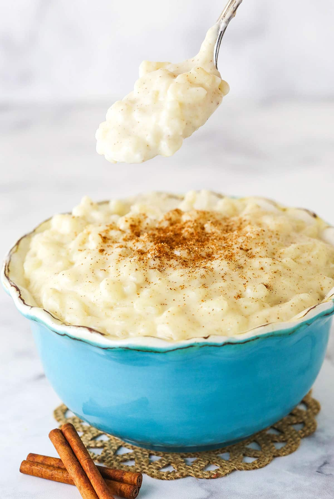

Homepage
Rice Pudding Recipe

Rice pudding is found in nearly every area of the world, and varies depending on the country and community. This dessert
recipe is a perfect comfort food, especially on cold nights.
Ingredients
- 100g pudding rice
- unsalted butter
- 50g brown sugar
- 700ml semi-skimmed milk
- 1 tsp nutmeg
- 1/2 tsp cinnamon
- 1 tsp vanilla essence
Steps
- Wash and drain the rice. Bring milk to boil in a saucepan, with all ingredients added except rice.
- Once the milk has boiled, add in the rice and stir for 30 seconds
- Put the lid on the saucepan, and leave reduce heat to low
- Leave the rice to cook for 25 minutes, then serve with toppings of your choice